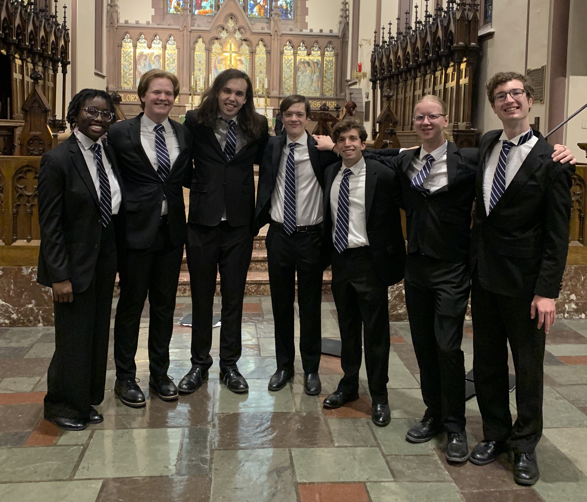
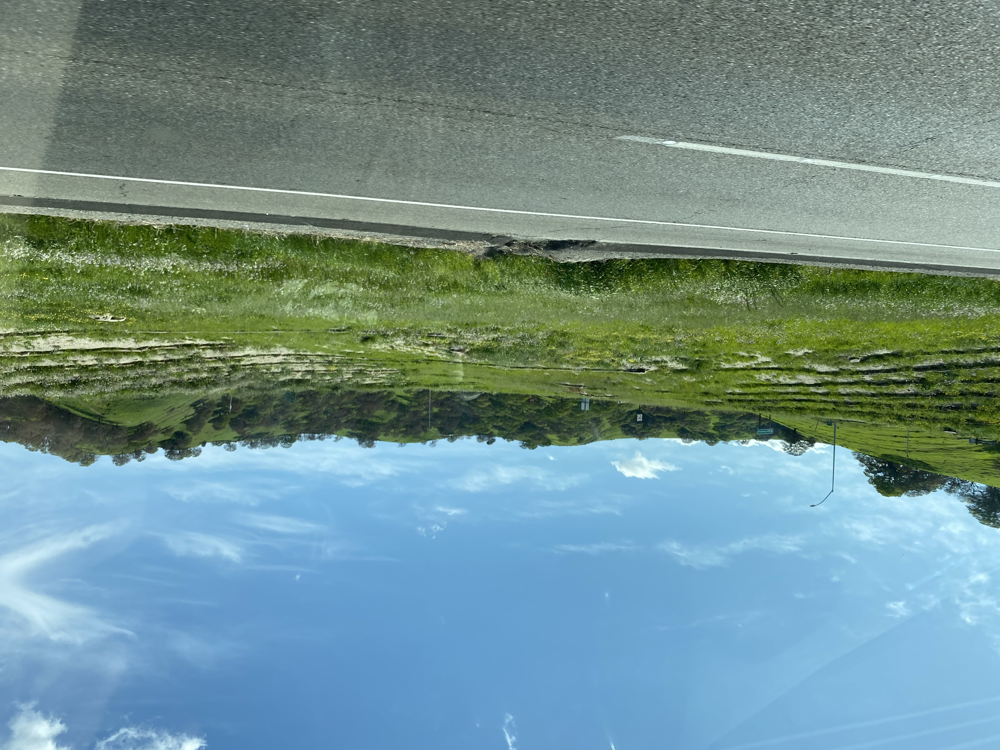
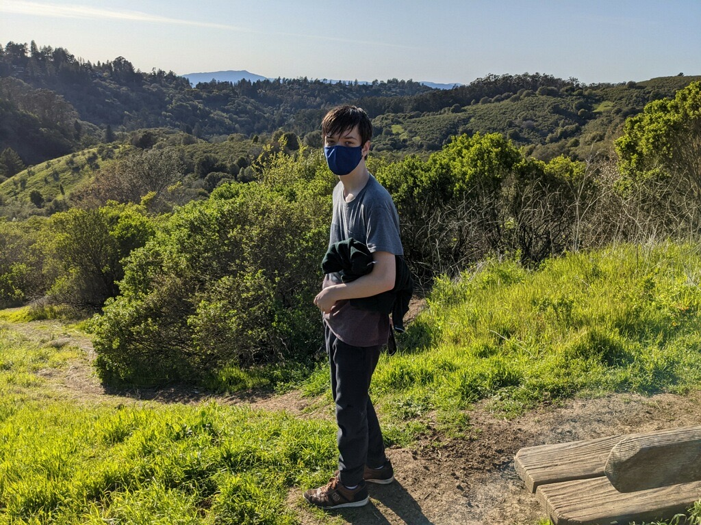
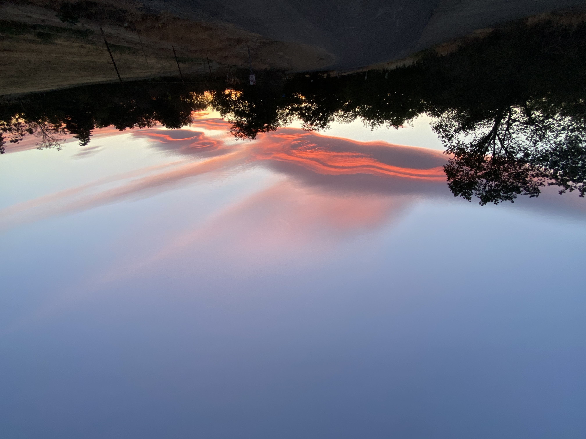

Welcome! I am a second-year undergraduate student at Case Western Reserve University, studying mathematics and computer science. I expect to graduate in Spring '26, and then I hope pursue a graduate degree in one of the above fields--I can't decide which because I love them both so much!
If you think you know me from somewhere, it may be from:
With both my father and my grandfather having been math professors, I have been exposed to math my whole life. It has always been a top interest of mine and I am looking forward to learning as much as I can.
During the summer of 2022 I did my first mathematical investigation on the Thue-Morse sequence, with my longtime friend and collaborator Jake Roggenbuck. At some point we plan to do more research into this area.
My main areas of interest are in differential equations, (abstract) algebra, and the parts of math that concern areas in computer science, like computational methods, integral transforms, and so forth. Of course I am nowhere near an expert -- there's a lot to learn. But I'm doing my best to get there!
My coursework in math thus far:
My work/research experience in math thus far:
I started to get seriously involved with programming in late 2019, when I was a tenth-grader at Davis Senior High. Since then, I have developed projects in four main languages, in teams and alone, for a variety of applications. Languages:
Besides C, which I have used a large amount, each of C++/Java/Python I have used roughly equally. The varying proficiency levels in them is mainly due the time since last major use, and for C++ particularly, knowledge (or lack thereof) of "idiomatic", "modern" styles.
While the full extent of my projects and tools is available on my GitHub page (both my own repositories and the organizations I am part of), here is a rundown of some of the highlights:
And here is my computer-science-related coursework:
While not an area I actively study, I have always enjoyed music (listening, performing, and composing) as a hobby.
I have sung for over a decade now, tenor / baritone, and have recently begun to enjoy barbershop music. Here is me after a performance with Luggage, a barbershop octet I sing with at Case:
I also enjoy composing, mainly for piano and voice. My piano compositions are mainly either serene melodies or random catchy beats I make up while messing around on a keyboard, while my vocal compositions tend to be very smooth, flowing, classical-esque works.
One of my other longest-lasting hobbies is writing. Two friends and I wrote a book back in 2017, which was so badly written (as we were 13) that I will not link a copy of it here for shame. I am currently editing a book, We Are Not Those Who Came Before Us, about the experiences of teenagers who went through the COVID pandemic.
While I spend most of my time living in Ohio now for school, California and its landscapes will always hold a special place in my heart. I've grown to love the scorching summer days and the cool nights, the winter rains and the spring bloom. Here are some of my favorite pictures from the lands around where I grew up and formed memories.
  